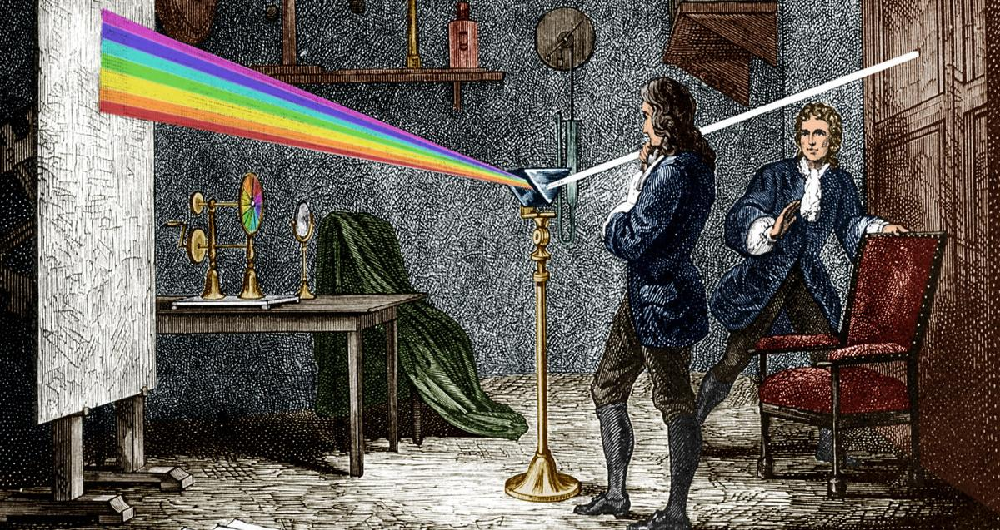
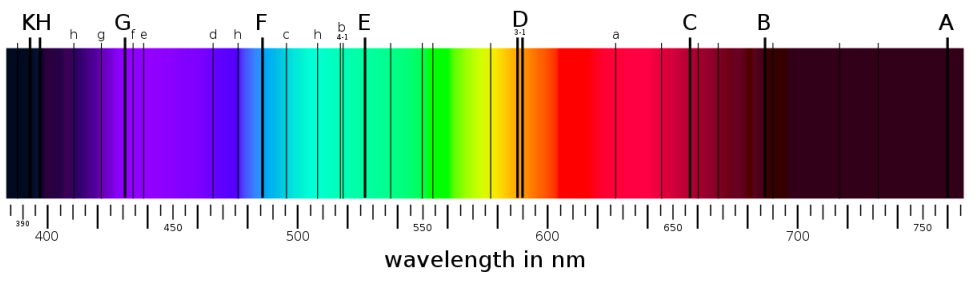
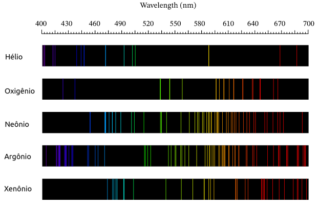
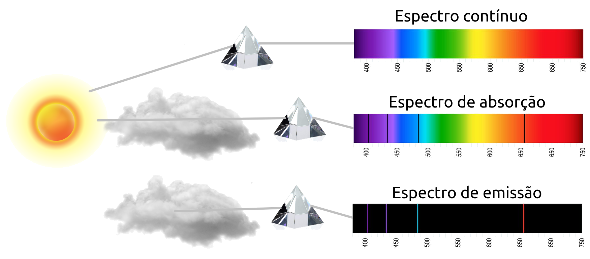
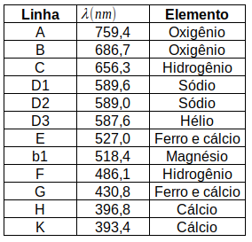
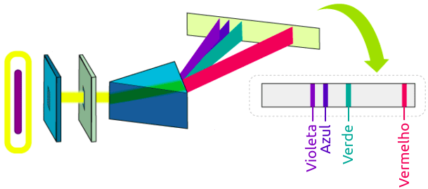
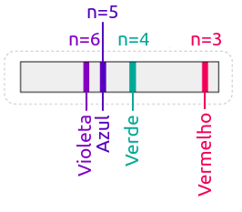

Aula13-102: Espectroscopia e fórmula de Balmer
Espectros de emissão e espectros de absorção
|
◦ Em 1666, Isaac Newton (★ 1642 — 1727 ✝) faz luz solar passar através de um prisma e a decompõe em uma infinidade de ondas de diferentes frequências. Na ocasião, Newton acreditou ter obtido com este experimento um espectro contínuo de luzes. |
 |
◦ Em 1814, o físico alemão Joseph von Fraunhofer (★ 1787 — 1826 ✝) desenvolveu o espectroscópio e realizou o mesmo experimento, só que agora com maior precisão, e, assim, descobriu que o leque de ondas decompostas apresentava descontinuidades, regiões para as quais não havia luz, regiões demarcadas por linhas escuras. Fraunhofer passou a catalogar estas linhas; ao todo, contabilizou 574 linhas; nomeo-as de A a K, atribuindo-lhes letras maiúsculas para as linhas mais grossas e letras minúsculas para as mais finas.

Atualmente, com espectroscópios modernos, a decomposição da luz solar mostra-nos milhares destas linhas escuras.
Fraunhofer também estudou os espectros de luz das estrelas Sírius, Castor, Pollux, Capella, Betelgeuse e Procyon.
◦ Em 1856, Robert Wilhelm Eberhard Bunsen (★ 1811 — 1899 ✝) e o seu colaborador Gustav Robert Kirchhoff (★ 1824 — 1887 ✝) usaram o bico de Bunsen (bico de gás inventado por Bunsem, este equipamento destacava-se por possuir uma chama incolor) para aquecer elementos químicos; ao aquecê-los, passaram a luz num espectroscópio e constataram que o espectro de emissão de luz para um dado elemento era discreto, constituido por uma série de linhas coloridas.

Bunsen e Kirchhoff pensaram que um elemento químico, quando aquecido, emitia luz em determinadas frequências, e quando iluminado absorvia luz nestas mesmas frequências. Esta hipótese, se correta, explicaria o espectro de emissão por eles produzido, bem como o espectro de absorção produzido por Fraunhofer. No caso do espectro de Fraunhofer, o sol emitiria luz em todas as frequências e a atmosfera solar e terrestre absorveria determinadas luzes de acordo com as suas constituições químicas.
Segundo Bunsen e Kirchhoff, a linha escura D do espectro de Franhofer correspondia ao elemento sódio. A luz que provinha do sol, ao transitar na atmosfera solar, esbarrava no elemento sódio, que roubava-lhe luz nesta frequência definida. Para sustentar a sua tese, Bunsen passou luz solar por uma núvem de sódio e depois a decompôs num prisma. Caso a linha D do espectro de Fraunhofer desaparecese, isto significaria que a núvem de sódio fora aquecida pela luz solar e emitiu a luz faltante, preenchendo o vão do espectro de absorção correspondente ao sódio. O experimento foi realizado e para surpresa de Bunsen, a linha escura D se intensificou.
Bunsen então trocou o sol por um sólido quente e constatou que as linhas escuras provenientes deste experimento tinham correspondentes no espectro de Fraunhofer. A partir deste experimento, Bunsen conclui que o sol é um sólido ou um gás quente envolto por uma atmosfera de gás mais frio. Estas camadas mais gélidas eram responsáveis por absorver luses e provocar as linhas escuras do espectro.
Leis de Kirchhoff
Embasado nos experimentos de Bunsen, Kirchhoff escreve três lei de caráter experimental para a espectroscopia:
I. Um corpo opaco quente, sólido, líquido ou gasoso, emite luz, formando um espectro contínuo.
II. Um gás transparente emite luz, formando um espectro de linhas discretas e brilhantes (de emissão). O número e a posição destas linhas depende dos elementos químicos presentes no gás.
III. Se um espectro contínuo passar por um gás à temperatura mais baixa, o gás frio causa a presença de linhas escuras (absorção). O número e a posição destas linhas depende dos elementos químicos presentes no gás.

Obs.: A luz que passa através do gás, não necessariamente é absorvida; se este gás estiver em equilíbrio, nem aquecendo nem resfriando, ele absorve luz de determinada frequência e a reemite em todas as direções, ocasionando um decréscimo de intensidade luminosa na direção original do raio.
Kirchhoff também estudou o espectro de Fraunhofer para luz solar e identificou alguns dos elementos que se manifestavam neste espectro.
|
 |
O espectro de emissão do átomo de Hidrogênio
|
 |
Corrente elétrica atravessa o interior de uma ampôla repleta de um determinado gás; o trânsito destes elétrons elevará a temperatura da espécie atômica e ela passará a emitir radiação, a qual é prontamente decomposta por um prisma e projetada em um anteparo. A figura ao lado ilustra este experimento quando se é colocado no interior da ampola hidrogênio à baixa pressão. O resultado é a projeção de 4 linhas de luz visível no anteparo. |
➔ FÓRMULA DE BALMER
Em 1885, o físico e matemático suiço Johann Jakob Balmer (★ 1825 — 1898 ✝) descobriu uma fórmula matemática capaz de descrever os comprimentos de onda das luzes emitidas em função de alguns números inteiros.
|
Observe que n é sempre maior do que 2, mas não há impeditivos para que n seja maior do que 6. Balmer apostou em sua fórmula, sugirindo que n poderia assumir valores maiores do que 6. Caso n seja, por exemplo, 7, n corresponderá a um comprimento de onda Balmer ainda sugeriu que sua fórmula fosse reescrita, de modo que aparecia uma nova variável; para o caso analisado aqui, do hidrogênio, esta variável valeria 2. Em que R é a constante de Rydberg; que vale 10 973 731,6 m-1 |
 |
Limitações da física clássica
A física clássica é incompetente ao tentar explicar os fenômenos analisados nesta aula; pois, em física clássica, uma amostra gasosa, como essa de hidrogênio, deveria "dançar conforme a música", interagir e espalhar radiação de qualquer frequência que incidisse sobre ela. A solução para este problema se dará com os trabalhos de Bohr sobre a natureza do átomo, assunto de nossa próxima aula.